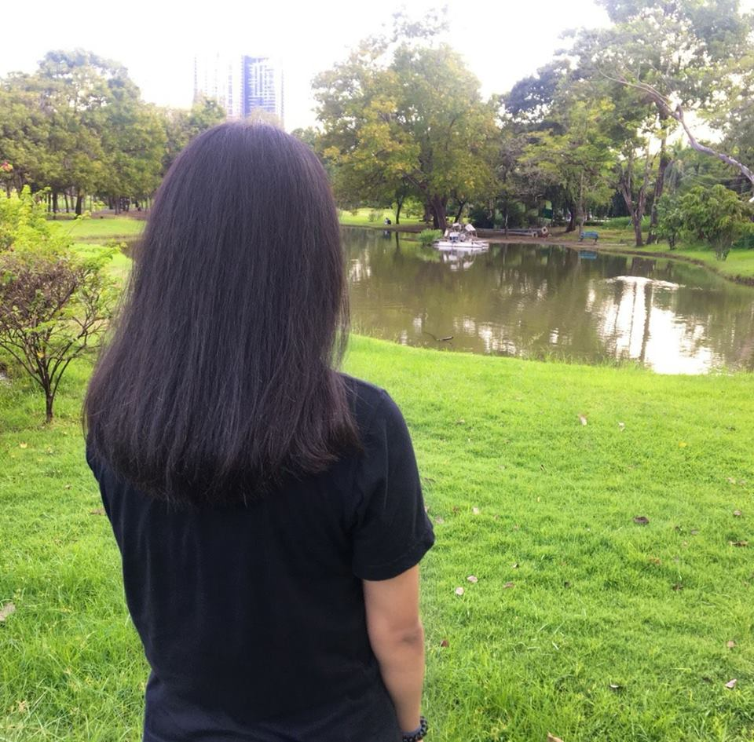

Kwanggs Chaywiriya
>My name is Penpan Chaywiriya. I’m from Thailand. I live in Nakhonsrithammarat. Nakhonsrithammarat is in the South of Thailad. I’m twenty-two years old. My family lives in a small village. I come from quite a small family. There are six people in my family. I’ve got two brother. I’ve got one sister. We’ve got one dog and tow cats.I like mate but I don’t like English.